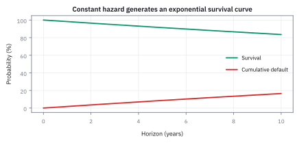
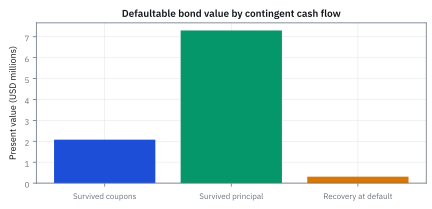
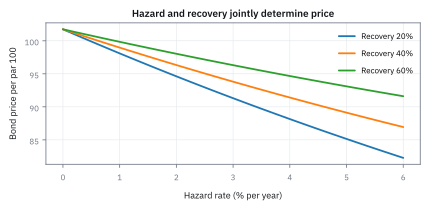
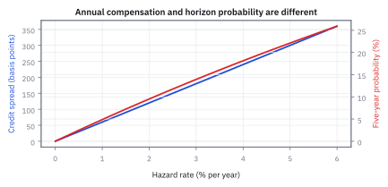
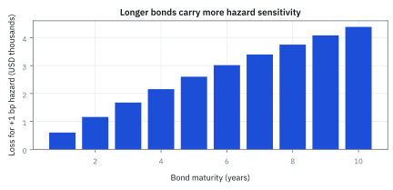

20.6 Defaultable Bonds, Hazard Rates, and Survival
แยกเวลา default ออกจาก discounting แล้วตั้งราคาทุก coupon, principal และ recovery ตามเหตุการณ์ที่ทำให้จ่ายจริง
คนหนึ่งสัญญาว่าจะคืน 100 USD ทุกปี แต่บางปีเขาอาจหยุดจ่าย. คุณจะตีราคาเงินงวดที่ 5 เหมือนเงินจากคนที่จ่ายแน่ ๆ ได้ไหม?
แยกก่อนว่าเงินมีค่าน้อยลงเพราะรอเวลาเท่าไร และมีโอกาสหายไปเพราะคนจ่ายผิดนัดเท่าไร. โอกาสที่ยังจ่ายอยู่เรียก survival; ความเร็วที่เหตุผิดนัดเกิดเรียก hazard rate.
เฉลย: ไม่ได้ เพราะเงินงวดที่ 5 ต้องผ่านทั้ง discounting และโอกาสรอดก่อน. ถ้าผิดนัดอาจได้เงินคืนบางส่วนเป็น recovery. credit risk ไม่ใช่ดอกเบี้ยเพิ่มหนึ่งก้อน มันคือเก้าอี้ที่อาจหายไปจากตารางเวลา.
ศัพท์ของ default model และเหตุผลที่ต้องใช้
- defaultable bond
- bond ที่ promised coupons หรือ principal อาจไม่ถูกจ่ายครบเพราะ issuer default ใช้สร้าง cash flows ที่ขึ้นกับ survival และ recovery
- default time
- เวลาสุ่มที่ credit event เกิดขึ้นและ contractual payments เปลี่ยน ใช้แบ่ง states ระหว่าง survival กับ default
- hazard rate
- instantaneous conditional default intensity เมื่อ issuer ยังรอดมาถึงเวลานั้น ใช้สร้าง survival probability ตาม maturity
- survival probability
- ความน่าจะเป็นที่ issuer ยังไม่ default จนถึงเวลาที่กำหนด ใช้ถ่วง coupons และ principal ซึ่งจ่ายเฉพาะเมื่อรอด
- cumulative default probability
- ความน่าจะเป็นที่ default เกิดภายใน horizon เท่ากับหนึ่งลบ survival probability ใช้สื่อสาร horizon credit risk
- default density
- probability mass ต่อหน่วยเวลาของการ default ณ เวลาใดเวลาหนึ่ง ใช้ integrate recovery ที่อาจจ่ายทุกขณะ
- recovery rate
- สัดส่วนของฐานที่เจ้าหนี้ได้รับหลัง default ใช้กำหนดขนาด recovery cash flow และ loss given default
- recovery of par
- convention ที่ recovery เท่ากับสัดส่วนของ face amount ใช้ใน reduced-form pricing แบบง่ายของตัวอย่างนี้
- recovery of market value
- convention ที่ recovery อิงมูลค่า bond ก่อน default ใช้ใน model อีกตระกูลและให้สมการราคาต่างจาก recovery of par
- reduced-form model
- model ที่ระบุ default intensity โดยตรงโดยไม่จำลอง asset value ของ issuer ใช้ calibrate credit prices จาก bond หรือ swap quotes
- credit spread
- yield หรือ rate ส่วนเกินเหนือ reference risk-free curve ใช้ชดเชย expected loss, risk premium, liquidity และ technical effects
- loss given default
- สัดส่วน exposure ที่เสียเมื่อ default ซึ่งเท่ากับหนึ่งลบ recovery rate ใน convention ง่าย ใช้เชื่อม hazard กับ spread
- risk-neutral hazard
- hazard rate ที่ calibrate ให้ตรง market prices ภายใต้ valuation measure ใช้ตั้งราคาแต่ไม่ใช่ forecast default frequency โดยตรง
- physical hazard
- hazard rate ภายใต้ real-world probability ที่ estimate จาก historical outcomes ใช้ forecast และ risk management แต่ต้องมี risk-premium adjustment ก่อน pricing
- credit01
- การเปลี่ยนแปลงมูลค่า USD เมื่อ credit hazard หรือ spread quote ขยับหนึ่ง basis point ตาม convention ที่ระบุ ใช้กำหนด hedge size
- credit default swap (CDS)
- สัญญาที่ผู้ซื้อจ่าย premium เพื่อรับเงินชดเชยเมื่อผู้ออกหนี้ default ใช้แยกและ hedge credit risk ของ bond
สัญกรณ์ หน่วย และ recovery convention
| สัญลักษณ์ | ความหมาย | หน่วย |
|---|---|---|
| $\tau_d$ | default time | ปี |
| $\lambda(t)$ | risk-neutral hazard rate ณ เวลา $t$ | ต่อปี |
| $Q(t)$ | survival probability ถึงเวลา $t$ | ความน่าจะเป็น |
| $F(t)$ | cumulative default probability ถึงเวลา $t$ | ความน่าจะเป็น |
| $q(t)$ | default density ณ เวลา $t$ | ต่อปี |
| $R$ | recovery rate ของ face amount | สัดส่วน |
| $1-R$ | loss given default | สัดส่วน |
| $D(0,t)$ | risk-free discount factor | USD วันนี้ต่อ USD ที่ $t$ |
| $r$ | constant continuously compounded risk-free rate ในตัวอย่าง | ต่อปี |
| $N$ | face amount ของ bond | USD |
| $c$ | annual coupon rate | ต่อปี |
| $T$ | bond maturity | ปี |
| $P_{def}$ | present value ของ defaultable bond | USD |
| $P_{rf}$ | present value ของ bond เดียวกันเมื่อไม่มี default | USD |
| $PV_{coupon}$ | present value ของ coupons ที่จ่ายใน survival states | USD |
| $PV_{principal}$ | present value ของ principal ที่จ่ายเมื่อรอดถึง maturity | USD |
| $PV_{recovery}$ | present value ของ recovery ที่จ่ายใน default states | USD |
| $s_{credit}$ | first-order credit-spread approximation | ต่อปี |
| $y$ | annual effective yield-to-maturity ที่แก้จากราคา | ต่อปี |
ที่มาที่ไป: สองสำนักคิดเรื่องความเสี่ยงว่าจะเจ๊ง
การตั้งราคาหุ้นกู้ที่มีความเสี่ยงผิดนัดชำระ มีสองแนวทางที่ต่างกันตั้งแต่ราก
แนวทางแรกซึ่ง Robert Merton เสนอในปี 1974 มองว่าบริษัทจะเจ๊งเมื่อมูลค่าสินทรัพย์ตกต่ำกว่าหนี้ ซึ่งมีเหตุผลทางเศรษฐกิจสวยงาม แต่ต้องรู้มูลค่าสินทรัพย์ของบริษัท ซึ่งมองไม่เห็น
แนวทางที่สองซึ่งพัฒนาขึ้นในทศวรรษ 1990 เลิกถามว่าทำไมถึงเจ๊ง แล้วมองการเจ๊งเป็นเหตุการณ์ที่โผล่มาแบบสุ่ม ด้วยอัตราที่แกะได้จากราคาตลาด
แนวทางที่สองใช้งานง่ายกว่ามากและเป็นที่นิยมในโต๊ะเทรด ส่วนแนวทางแรกยังใช้ในงานวิเคราะห์เครดิตที่ต้องการเข้าใจสาเหตุ
modeling convention ของตัวอย่าง USD
bond จ่าย coupon ปีละครั้ง $Nc$ หาก issuer รอดถึง payment date และจ่าย principal หากรอดถึงปี 5 Default เกิดได้ต่อเนื่องด้วย constant risk-neutral hazard 1.8% ต่อปีและเป็นอิสระจาก deterministic risk-free rate 4.5% ต่อปี Recovery of par 40% จ่ายทันที ณ default ไม่มี accrued coupon, restructuring, taxes, transaction costs หรือ liquidity premium ตัวอย่างใช้ continuous discounting แต่ yield-to-maturity รายงานแบบ annual effective เพื่อแสดงว่า quote convention เปลี่ยนเลขได้
ขั้นที่ 1 — hazard rate คือ conditional rate ไม่ใช่ unconditional probability
คำแรกที่ต้องนิยามให้ตรงกันคือ hazard rate มันไม่ใช่โอกาสที่จะเจ๊งในปีนี้ แต่เป็นอัตราที่จะเจ๊ง *เมื่อรู้ว่ายังไม่เจ๊ง* ซึ่งเป็นคนละตัวเลข
เงื่อนไขหลังเครื่องหมาย given บอกว่า issuer ต้องรอดมาถึง $t$ ก่อน จึงตีความ hazard ต่อปีได้ถูก
จากคนที่ยังรอดสู่สมการ survival
ลองเริ่มจากคนกู้ที่ยังไม่ผิดนัด 10,000 ราย ด้วย hazard 1.8% ต่อปี ในช่วงหนึ่งเดือนสั้น ๆ คาดว่ามีเหตุประมาณ 10,000 คูณ 0.018 หาร 12 เท่ากับ 15 ราย งวดถัดไปคำนวณจากคนที่ยังเหลือ ไม่เริ่มนับ 10,000 ใหม่
เขียนการนับนี้เป็นสัดส่วน Q จะได้บรรทัดแรก ลบ Q เดิม หารช่วงเวลา แล้วให้ช่วงสั้นลงได้ derivative นำ Q ไปหารเพื่อเปลี่ยนเป็น derivative ของ log จากนั้นรวมตลอดเวลาและใช้ว่าเริ่มรอดแน่นอน จึงได้ exponential ในสูตรถัดไป
นี่เป็นการนับด้วยน้ำหนักเพื่อ valuation หากต้องการพยากรณ์ default จริงต้องประมาณ hazard ภายใต้โลกจริงแยกกัน
ขั้นที่ 2 — นิยามของ hazard rate ผ่านโอกาสรอด
บรรทัดนี้เป็น นิยาม ของความสัมพันธ์ระหว่างอัตราเจ๊งกับโอกาสรอด อ่านรูปของมันได้: ถ้าอัตราคงที่ในช่วงสั้น ๆ โอกาสรอดผ่านช่วงนั้นคือหนึ่งลบอัตราคูณความยาวช่วง การรอดถึงเวลาหนึ่งคือการรอดผ่านทุกช่วงติดต่อกัน จึงเป็นผลคูณของทุกช่วง และผลคูณของหลายก้อนที่ใกล้หนึ่ง กลายเป็นเลขยกกำลังของผลรวม เมื่อซอยช่วงถี่ขึ้นไม่สิ้นสุด รูปนี้จึงเป็นเรื่องเดียวกับการทบต้นต่อเนื่องในหัวข้อ 19.1 ต่างแค่ของที่สะสมเป็นความเสี่ยง ไม่ใช่ดอกเบี้ย
integrated hazard สะสม conditional default intensity ตามเวลา แล้ว exponential แปลงเป็น survival probability ระหว่างศูนย์กับหนึ่ง
ขั้นที่ 3 — constant hazard ทำให้คำนวณตรง
ถ้าอัตราคงที่ตลอด สูตรจะยุบเหลือรูปง่ายที่กดเครื่องคิดเลขตามได้ทันที ห้าบรรทัดนี้ยังตรวจตัวเองด้วยการอินทิเกรตย้อนกลับ ซึ่งเป็นนิสัยที่ควรทำทุกครั้ง ที่เขียนสามอย่างนี้คู่กัน เพราะมันพลาดกันบ่อยเรื่องเครื่องหมาย
แทนอัตราคงที่ลงใน integral ของขั้นที่ 2 ได้ผลคูณธรรมดา โอกาสรอดจึงอยู่ในรูปที่กดเครื่องคิดเลขตามได้
รอดกับเจ๊งเป็นสองกรณีที่ครบและไม่ทับกัน โอกาสจึงรวมกันได้หนึ่ง เอาหนึ่งลบก็ได้โอกาสเจ๊งสะสม แล้วหา derivative ของมัน ได้ density ตามความสัมพันธ์ในหัวข้อ 1.8
บรรทัดสุดท้ายเป็นการตรวจย้อนกลับ อินทิเกรต density ตั้งแต่ศูนย์ถึงเวลาหนึ่ง ต้องได้โอกาสเจ๊งสะสมกลับมาพอดี ซึ่งยืนยันว่าสามบรรทัดบนสอดคล้องกัน
รูปนี้เป็นตัวเดียวกับที่หัวข้อ 1.11 เรียกว่า exponential distribution และสมบัติที่ว่ารอมาแล้วเท่าไรก็ไม่มีผล ก็ยังใช้ได้ที่นี่ ซึ่งเป็นทั้งข้อดีและข้อจำกัดของการเลือกอัตราคงที่
แปลง hazard 1.8% เป็นความเสี่ยง 5 ปี
ของที่มี: constant hazard rate 1.8% ต่อปี และ horizon 5 ปี.
ถามว่า probability ที่ยังรอดและที่ default ภายใน 5 ปีเท่าไร?
คำตอบ: survival คือ 0.913931 และ default probability คือ 0.086069; bond ตัวอย่างมีราคา \$9,684,390.68.
ตรวจเองใน 10 วินาที: สอง probability ต้องบวกเป็น 1.000000.
เอาไปใช้จริง: credit desk แยก survival, recovery และ discounting ก่อน price bond หรือสัญญาประกันผิดนัดที่เรียก credit default swap (CDS); ห้ามคูณ 1.8% ด้วย 5 แล้วเรียก probability โดยไม่บอก approximation.
ขั้นที่ 4 — survival และ cumulative default probability ที่ 5 ปี
แทนตัวเลขห้าปีของโจทย์ เพื่อดูว่าโอกาสรอดกับโอกาสเจ๊งอยู่ที่เท่าไร
model ให้โอกาสรอด 91.3931% และโอกาส default ภายใน 5 ปี 8.6069% ภายใต้ risk-neutral measure
ความน่าจะเป็นแบบไม่ต่อเนื่อง — โครงสร้าง survival และ default probability ทีละงวด
ความเข้าใจเรื่องฐานผู้รอดชีวิตที่หดตัวลงเป็นหัวใจสำคัญของการคิดความเสี่ยงด้านเครดิต ผู้ปฏิบัติงานมือใหม่มักเข้าใจผิดว่าหาก hazard rate เท่ากับ 2% ทุกงวด โอกาสผิดนัดในงวดที่สองก็ควรเป็น 2% ด้วย
แต่ในความเป็นจริง โอกาสผิดนัดในงวดที่สองคิดเป็น 1.96% บนเงินต้นเริ่มต้น เพราะมีลูกหนี้ 2% ได้ผิดนัดชำระหนี้ไปแล้วตั้งแต่งวดแรก การติดตามตัวเลขบน spreadsheet จึงช่วยป้องกันความสับสนระหว่าง marginal probability กับ conditional hazard rate ได้อย่างแม่นยำ
ในระบบงานจริงและแบบจำลองตารางคำนวณ เวลาถูกแบ่งเป็นงวดไม่ต่อเนื่อง โอกาสรอดสะสม $q(t)$ จึงคำนวณแบบคูณทบต้นด้วยสัดส่วนผู้รอด $1 - h_{t-1}$ ในแต่ละงวด
โอกาสเกิดการผิดนัดชำระในงวด $t$ คือผลต่างระหว่างผู้ที่รอดมาถึงต้นงวดกับผู้ที่รอดไปจนจบงวด ซึ่งเท่ากับ $q(t-1) h_{t-1}$ พอดี
ตัวเลขจริงจาก spreadsheet แสดงให้เห็นว่าแม้ hazard rate จะคงที่ 2% ต่องวด แต่ default probability แต่ละงวดจะลดลงเรื่อย ๆ เพราะฐานผู้รอดชีวิตหดตัวลงทุกงวด
แล้วเอาไปใช้ทำอะไรได้จริงบ้าง
การแยกความเสี่ยงว่าจะเจ๊งออกจากการคิดลดตามเวลา ทำให้ตั้งราคาตราสารหนี้ที่มีความเสี่ยงได้
ใช้ตั้งราคาหุ้นกู้เอกชน ซึ่งเป็นตลาดที่ใหญ่มากและเป็นแหล่งเงินทุนหลักของบริษัท
ใช้แปลงระหว่างส่วนต่างอัตราผลตอบแทนกับโอกาสเจ๊ง ซึ่งเป็นสองภาษาที่ตลาดใช้ปนกัน
ใช้คำนวณความไวของราคาต่อความเสี่ยงเครดิต ซึ่งเป็นตัวเลขที่โต๊ะเครดิตดูทุกวัน
ภาพที่ 1 — survival ลดลงและ cumulative default เพิ่มขึ้น

สองเส้นรวมเป็นหนึ่งทุก horizon และความชันเริ่มต้นของ cumulative default ใกล้ hazard 1.8% ต่อปี แต่ชะลอลงเพราะ probability mass ที่ยังรอดลดลง
ตั้งราคาแต่ละ cash flow ตาม event ที่ทำให้จ่าย
coupon ที่ปี $i$ ต้องการทั้ง survival ถึง $i$ และ discount ถึง $i$ Principal ใช้เงื่อนไขเดียวกันที่ maturity ส่วน recovery จ่ายเมื่อ default จึงถ่วงด้วย default density และ discount ณ default time การรวม recovery เข้า principal ที่ maturity จะเปลี่ยน timing และทำให้ราคา sensitivity ผิด
ขั้นที่ 5 — defaultable bond price ภายใต้ recovery of par
ราคาของ bond ที่มีความเสี่ยงเจ๊ง แยกเป็นสามก้อนตามเหตุการณ์ที่ทำให้ได้เงินจริง สี่บรรทัดนี้ใช้กฎเดียวกับหัวข้อ 18.2 คือมูลค่าของสิทธิ์ที่ไม่ทับกันบวกกันได้ เพิ่มมาแค่ว่าแต่ละก้อนต้องคูณโอกาสที่จะได้เงินก้อนนั้นจริง
coupon งวดหนึ่งจะได้ก็ต่อเมื่อยังไม่เจ๊งถึงวันนั้น จึงคูณด้วยโอกาสรอดจากขั้นที่ 2 แล้วคิดลดตามหัวข้อ 18.1 เงินต้นใช้เหตุผลเดียวกัน คือได้คืนตอนจบถ้ายังรอด
ก้อนที่สามต่างออกไปโดยสิ้นเชิง เงินคืนบางส่วนได้เมื่อเจ๊ง ไม่ใช่เมื่อรอด จึงคูณด้วย density ของการเจ๊ง ณ เวลานั้น แล้วรวมทุกเวลาที่เจ๊งได้
บวกสามก้อนเข้าด้วยกันได้เพราะสามเหตุการณ์นี้ไม่ทับกัน เงินก้อนหนึ่งมาจากทางใดทางหนึ่งเท่านั้น
อ่านผลให้ตรง ราคาของ bond ที่มีความเสี่ยงเจ๊ง ไม่ใช่ราคาปกติคูณตัวลดอะไรสักตัว มันคือสามบัญชีที่ต้องคิดแยกกัน และแต่ละบัญชีมีเงื่อนไขของตัวเอง
กาง integral ของ recovery
ที่เวลา t เงินคืนเมื่อผิดนัดคือ R คูณ N ถ่วงด้วย density ของเวลาที่ผิดนัด แล้วคิดลดจากเวลานั้นกลับวันนี้ การคูณ exponential รวมเลขชี้กำลังได้เพราะ rate และ hazard คงที่
primitive ของ exponential ต้องส่วนด้วยลบของผลรวม rate กับ hazard เพราะ derivative ของเลขชี้กำลังเป็นลบผลรวมนี้ แทนขอบบน T และขอบล่างศูนย์แล้วเครื่องหมายลบกลับเป็นหนึ่งลบ exponential ได้สูตรที่ใช้คำนวณ recovery 308,812.72 USD
ขั้นที่ 6 — แทน deterministic rate กับ constant hazard
แทนสมมติฐานที่ง่ายที่สุดลงในสามก้อนนั้น จะได้สูตรที่คำนวณได้ทันที หกบรรทัดนี้มีข้อสังเกตที่ควรจำอยู่บรรทัดเดียว คือคิดลดกับโอกาสรอดรวมกันเป็นอัตราเดียว ซึ่งเป็นเหตุผลที่ bond ที่เสี่ยงเจ๊งซื้อขายกันด้วยส่วนต่างอัตรา ไม่ใช่ด้วยโอกาสเจ๊งโดยตรง
บรรทัดแรกคือจุดที่ทุกอย่างง่ายลง ตัวคิดลดคูณโอกาสรอด เป็นเลขยกกำลังสองก้อนที่รวมเลขชี้กำลังกันได้ ผลคือคิดลดด้วยอัตราที่เป็นผลบวกของสองอัตรา
นั่นคือเหตุผลที่ตลาดพูดถึงส่วนต่างอัตราเป็นภาษาของความเสี่ยงเจ๊ง มันไม่ใช่การเปรียบเปรย ทั้งสองอย่างเข้าไปอยู่ที่เดียวกันในสูตรจริง ๆ
แทนลงในสองก้อนแรกของขั้นที่ 5 ตรง ๆ ส่วนก้อนที่สามรวมสอง exponential เข้าด้วยกันเช่นกัน และดึงอัตราเจ๊งออกมาข้างหน้าเพราะเป็นค่าคงที่ แล้วอินทิเกรต
อ่านผล สัดส่วนข้างหน้าคือโอกาสที่จะเจ๊งก่อนครบกำหนด เมื่อคิดลดแล้ว ยิ่งอัตราเจ๊งสูงเทียบกับดอกเบี้ย ก้อนนี้ยิ่งใหญ่
ตารางคิดลด: coupon ห้างวด งวดละบรรทัด
| ปีที่ $i$ | $e^{-(r+\lambda)i}$ | coupon $Nc=\$500{,}000$ คิดลดแล้ว |
|---|---|---|
| 1 | 0.938943474 | \$469,471.74 |
| 2 | 0.881614847 | \$440,807.42 |
| 3 | 0.827786507 | \$413,893.25 |
| 4 | 0.777244738 | \$388,622.37 |
| 5 | 0.729788874 | \$364,894.44 |
| รวม | 4.155378440 | \$2,077,689.22 |
อัตราคิดลดรวมคือ $r+\lambda=0.045+0.018=0.063$ ต่อปี เพราะเงินงวดนั้นจะได้ก็ต่อเมื่อรอดมาถึงวันจ่ายเท่านั้น คอลัมน์ขวาคือ 500,000 USD คูณตัวคิดลดของแถวนั้น
ขั้นที่ 7 — คำนวณสามองค์ประกอบเป็น USD
อ่านผลรวม coupon จากตารางข้างบน แล้วคิดสองก้อนที่เหลือ คือเงินต้นปีที่ห้า และเงินที่ได้คืนถ้าเกิด default ระหว่างทาง
เงินต้นใช้ตัวคิดลดของปีที่ห้าตัวเดียวกับแถวสุดท้ายในตาราง
ก้อน recovery เล็กมากเมื่อเทียบกับสองก้อนแรก เพราะโอกาส default ในห้าปีอยู่ที่ราว 8.6% เท่านั้น และได้คืนเพียง 40%
ขั้นที่ 8 — รวมเป็นราคา defaultable bond
บวกสามก้อนเข้าด้วยกันเป็นราคาเดียว
ราคาเท่ากับ 96.8439068 ต่อ par 100 หรือ 9.684 million USD สำหรับ face 10 million USD
ภาพที่ 2 — price decomposition แสดงบทบาทของ recovery

principal ที่รอดเป็นองค์ประกอบใหญ่ที่สุด Recovery ไม่ได้ลบ expected loss ทั้งหมด แต่เพิ่ม value เฉพาะ default states และขึ้นกับเวลาที่จ่าย
ขั้นที่ 9 — เทียบกับ bond ที่ไม่มี default
bond ที่ไม่มีความเสี่ยง default ใช้สูตรเดียวกันแต่คิดลดด้วย $r$ อย่างเดียว
ต่างจากก่อนหน้าตรงที่ตัวคิดลดใช้ 0.045 แทน 0.063
ส่วนต่างของราคาสองใบคือ $10{,}173{,}877.69-\$9{,}684{,}390.68=\$489{,}487.01$ ซึ่งคือมูลค่าที่ตลาดหักไว้เพราะความเสี่ยง default
ขั้นที่ 10 — yield-to-maturity ที่แก้จาก defaultable price
ตลาดไม่ได้คุยกันด้วยราคา แต่คุยด้วย yield จึงต้องแก้ย้อนกลับหา yield จากราคาที่เพิ่งได้
yield-to-maturity เป็น internal rate ที่ยุบ cash flows เหลือเลขเดียว ไม่ใช่ hazard rate และไม่ได้แยก recovery หรือ timing
ขั้นที่ 11 — spread approximation ที่ควรใช้ด้วยความระวัง
มีสูตรลัดที่นักลงทุนใช้กันทั่วไป ขั้นนี้แสดงมันพร้อมบอกว่ามันใกล้เคียงแค่ไหน และพังเมื่อไร
hazard คูณ loss given default ให้ first-order expected-loss spread เมื่อ recovery และ rates เรียบ โดย risk-neutral hazard มีการชดเชยความเสี่ยงอยู่ในตัวแล้ว สูตรลัดนี้ไม่แยก liquidity, coupon timing หรือ convexity
ที่มาทีละขั้น — derive สูตร credit spread approximation จาก Taylor expansion
สูตรลัด $s_{\text{credit}} \approx \lambda(1 - R)$ ที่ใช้กันทั่วไปในห้องค้ามีที่มาจาก Taylor expansion อันดับที่หนึ่ง ซึ่งมีความแม่นยำสูงเมื่อ hazard rate มีขนาดเล็กและเส้นอัตราผลตอบแทนค่อนข้างแบน
อย่างไรก็ตาม หากพันธบัตรมีอายุยาวนานหรือมีโครงสร้างคูปองที่ซับซ้อน ผลของการคิดลดข้ามเวลาและฐานผู้รอดชีวิตที่ลดทอนลง จะทำให้ credit spread ที่แท้จริงเบี่ยงเบนออกจากค่าประมาณนี้ การคำนวณกระแสเงินสดเต็มรูปแบบจึงยังคงจำเป็นเสมอ
เริ่มจากพันธบัตรไร้คูปองอายุหนึ่งงวดที่มีความเสี่ยงผิดนัด หาก issuer รอดจะจ่ายหนึ่งดอลลาร์เต็ม แต่หากผิดนัดชำระหนี้จะจ่ายคืนเพียงสัดส่วน $R$
กระจาย $e^{-\lambda}$ ด้วย Taylor series รอบศูนย์สำหรับค่า hazard ขนาดเล็ก จะได้กระแสเงินสดคาดหมายเท่ากับ $1 - \lambda(1 - R)$
ใช้การประมาณเลขชี้กำลัง $1 - x \approx e^{-x}$ จะได้ราคาพันธบัตรในรูปผลรวมของอัตราไร้ความเสี่ยงบวกด้วย $\lambda(1 - R)$ ซึ่งก็คือ credit spread นั่นเอง
ภาพที่ 3 — recovery ลดความชันของ price ต่อ hazard

เมื่อ hazard สูงขึ้นราคา bond ลด แต่ recovery สูงช่วยพยุง default-state cash flow เส้นยังไม่เป็นเส้นตรงเพราะ survival probability กับ recovery timing เป็น exponential
ภาพที่ 4 — hazard-times-loss เป็น local approximation ไม่ใช่ pricing engine

เส้นตรงแสดง first-order credit spread ที่ recovery 40% ขณะที่ cumulative default probability โค้งตาม horizon นักวิเคราะห์ต้องไม่สลับ annual spread กับ multi-year probability
ขั้นที่ 12 — credit01 จาก bump hazard หนึ่ง basis point
โต๊ะความเสี่ยงไม่ได้ถามว่าราคาเท่าไร แต่ถามว่าถ้าความเสี่ยงเจ๊งแย่ลงนิดเดียว จะเสียเงินเท่าไร ขั้นนี้ตอบคำถามนั้นด้วยการขยับแล้วคำนวณใหม่
long bond ขาดทุนประมาณ 2,603 USD เมื่อ risk-neutral hazard เพิ่มหนึ่ง basis point โดยคง risk-free curve กับ recovery ไว้
ภาพที่ 5 — credit01 โตตาม maturity ก่อนถูก survival ลดน้ำหนัก

bond อายุยาวมีเวลารับ hazard exposure มากกว่า แต่ sensitivity ไม่โตเป็นเส้นตรงตลอดเพราะ distant cash flows ถูก discount และมีโอกาสรอดต่ำลง
calibrate hazard curve จาก bond prices
ใช้ risk-free discount curve กับ recovery convention ที่ freeze แล้ว แก้ piecewise-constant hazard buckets จาก bonds หรือ credit swaps เรียง maturity คล้าย bootstrapping แต่ corporate bonds ต่างกันด้าน coupon, seniority, liquidity, tax และ embedded options จึงอาจต้อง weighted global fit หลัง calibration ต้อง reprice ทุก instrument, ตรวจ survival ไม่เพิ่มตามเวลา, bump quotes เพื่อหา bucketed credit01 และแยก rate DV01 จาก credit risk
กับดัก: failure modes และ model limits
hazard 1.8% ไม่ใช่ five-year probability 9% แบบ exact, yield spread ไม่ใช่ hazard, recovery 40% ต้องบอกว่า 40% ของอะไรและจ่ายเมื่อไร และ physical default forecast ใช้แทน risk-neutral hazard ไม่ได้โดยตรง Model นี้สมมติ deterministic independent rates, constant hazard และ recovery of par จึงพลาด wrong-way risk, stochastic recovery, liquidity และ capital structure — issuer default ได้จริงเพียงครั้งเดียว แต่ spreadsheet ที่ event logic ผิดสามารถนับ default ซ้ำได้ทุก coupon
ข้อจำกัด: วิธีนี้สมมติอะไร และของจริงเป็นอย่างไร
| เรื่อง | วิธีนี้สมมติว่า | ของจริงเป็นอย่างไร | ผลที่ตามมาเวลาใช้งาน |
|---|---|---|---|
| อัตราที่คงที่ | อัตราการเจ๊งคงที่ตลอด | มันเปลี่ยนตามวัฏจักรเศรษฐกิจ | ราคาที่คำนวณได้ผิดในช่วงเปลี่ยนวัฏจักร ซึ่งเป็นช่วงที่สำคัญที่สุด |
| independence | การเจ๊งไม่เกี่ยวกับอัตราดอกเบี้ย | บริษัทเจ๊งตอนเศรษฐกิจแย่และดอกเบี้ยเปลี่ยน | ราคาที่คำนวณได้ต่างจากความจริง โดยเฉพาะในภาวะวิกฤติ |
| อัตราการได้คืน | รู้ว่าจะได้คืนกี่เปอร์เซ็นต์ | ตัวเลขนี้เหวี่ยงมากและต่ำที่สุดตอนวิกฤติ | ความเสียหายจริงมากกว่าที่คำนวณ เพราะได้คืนน้อยลงพอดีตอนที่เจ๊งเยอะ |
แถวล่างเป็นความสัมพันธ์ที่แบบจำลองมาตรฐานมองข้าม และทำให้ประเมินความเสียหายต่ำเกินจริง
ราคา bond และ recover hazard จาก observed price
import numpy as np
from scipy.optimize import brentq
N, c, r, R, T = 10_000_000, 0.05, 0.045, 0.40, 5
def price(lam):
coupons = sum(N*c*np.exp(-(r+lam)*i) for i in range(1,T+1))
principal = N*np.exp(-(r+lam)*T)
recovery = N*R*lam/(r+lam)*(1-np.exp(-(r+lam)*T))
return coupons+principal+recovery
observed = 9_684_390.677564288
lam = brentq(lambda x: price(x)-observed, 1e-8, 0.50)
assert abs(lam-0.018) < 1e-12
assert abs(price(lam+1e-4)-price(lam)+2603.023611159995) < 1e-8production calibration ต้องใช้ exact cash-flow dates, quote bid-ask, recovery hierarchy และ robust root bounds พร้อมตรวจว่าราคาที่ป้อนสอดคล้องกับ positive survival curve
สิ่งที่ยังไม่ได้พูดถึง: credit default swap
defaultable bond ผสม rate, coupon, liquidity และ credit ไว้ในราคาเดียว Credit default swap แยกการซื้อ protection ออกเป็น premium leg กับ default leg ชัดกว่า หัวข้อถัดไปจะใช้ survival curve เดิมตั้ง par spread และ mark-to-market ของ protection contract
สรุปที่ใช้ได้จริง
- hazard rate เป็น conditional intensity ส่วน cumulative default probability เท่ากับหนึ่งลบ exponential survival
- defaultable bond price รวม survived coupons, survived principal และ recovery cash flow ตามเวลาที่เกิด default
- ตัวอย่าง face \$10,000,000 ให้ five-year default probability 8.6069%, ราคา \$9,684,390.68 และ credit01 ประมาณ -\$2,603 ต่อ hazard basis point
- spread approximation $\lambda(1-R)$ มีประโยชน์เพื่อ intuition แต่ไม่แทน full cash-flow valuation
- risk-neutral hazard ใช้ pricing ส่วน physical hazard ใช้ forecasting และต้องไม่สลับกันโดยไม่ระบุ risk premium